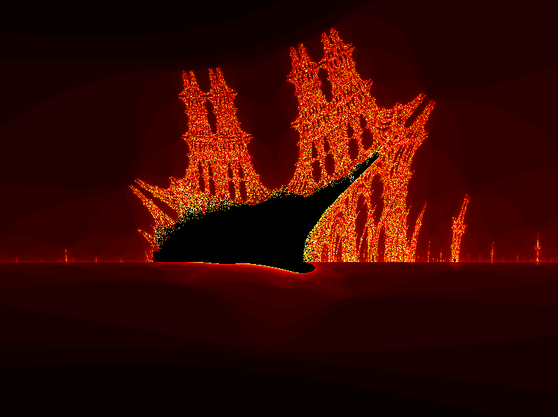
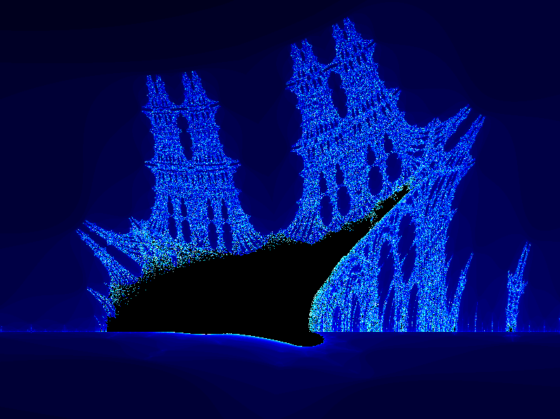
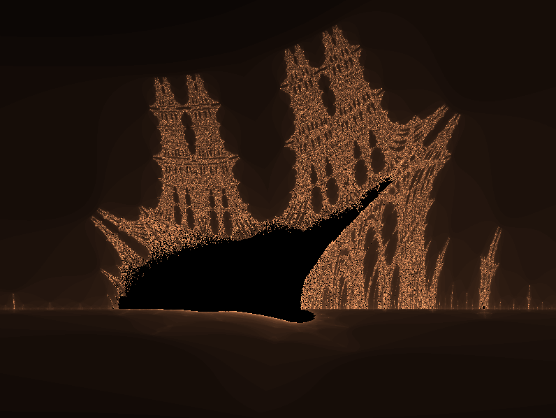
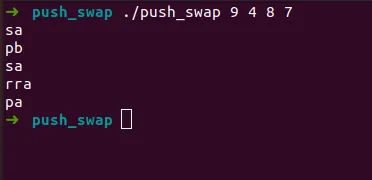

Software Engineering
Software Engineering
Codam / 42 Network
At Codam (part of the global 42 Network), I learned to solve complex problems by building everything from scratch. No standard libraries, no shortcuts — just pure C, logic, and system-level thinking. This period defined my ability to understand what happens under the hood of a computer.
About this project
libft
My own implementation of standard C library functions. This project served as the foundation for all subsequent projects, teaching me how basic functions work under the hood.
get_next_line
A function that returns a line read from a file descriptor. This project introduced the concept of static variables and efficient buffer management.
ft_printf
A custom implementation of the printf function. This project was an exercise in variadic arguments and complex string formatting.
fract-ol
A graphics project for rendering fractals (Mandelbrot/Julia) using the MiniLibX. Focused on mathematical precision and real-time image processing.



pipex
An implementation of the Unix pipe mechanism. Focused on process handling (fork, execve), file descriptors, and inter-process communication.
push_swap
A complex sorting algorithm project. Focused on algorithmic efficiency and data structures (stacks) to find the smallest set of instructions for sorting.

piscine
The intensive 4-week selection period covering the fundamentals of C, shell scripting, and logic under high pressure.
C00 & C01: Progression from basic C syntax to advanced concepts like pointers and memory manipulation.
Rush Projects: Collaborative weekend projects solving complex problems in a team under tight deadlines.
Details
- Type: Software Engineering
- Technology: C, Unix
- Year: 2024
- GitHub: Link